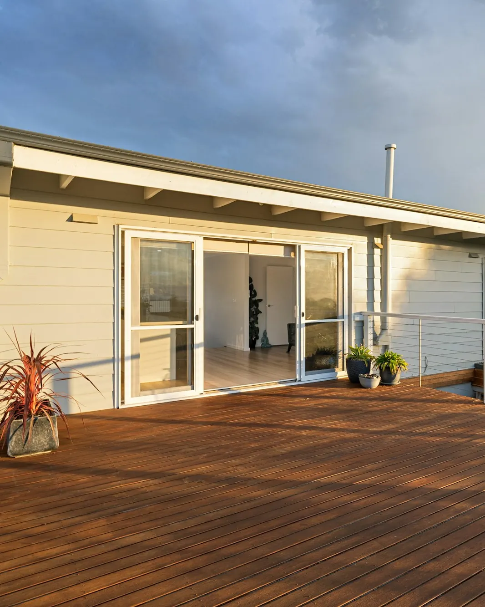
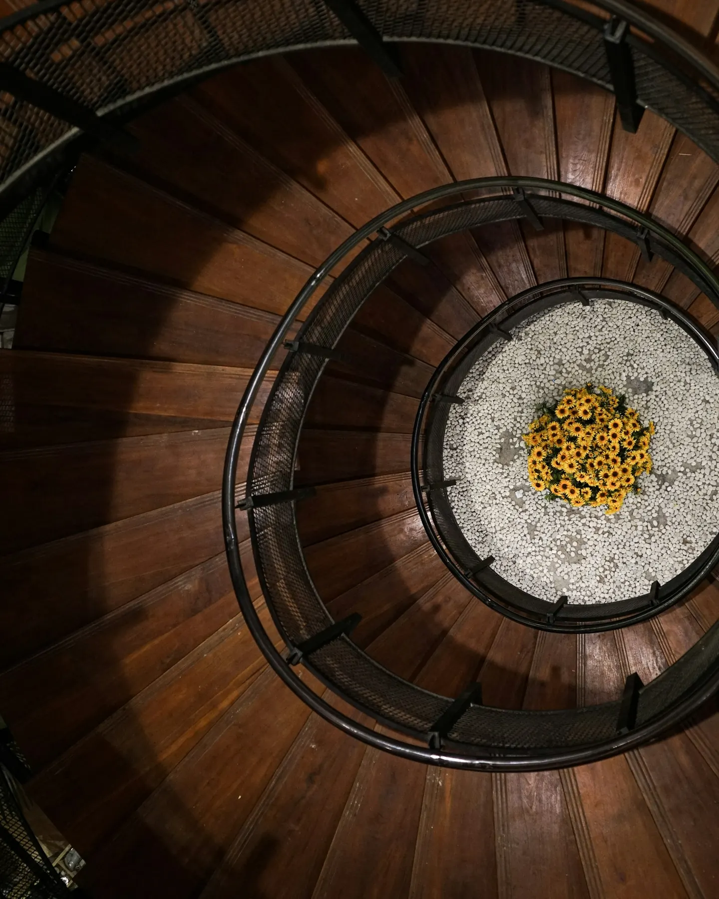
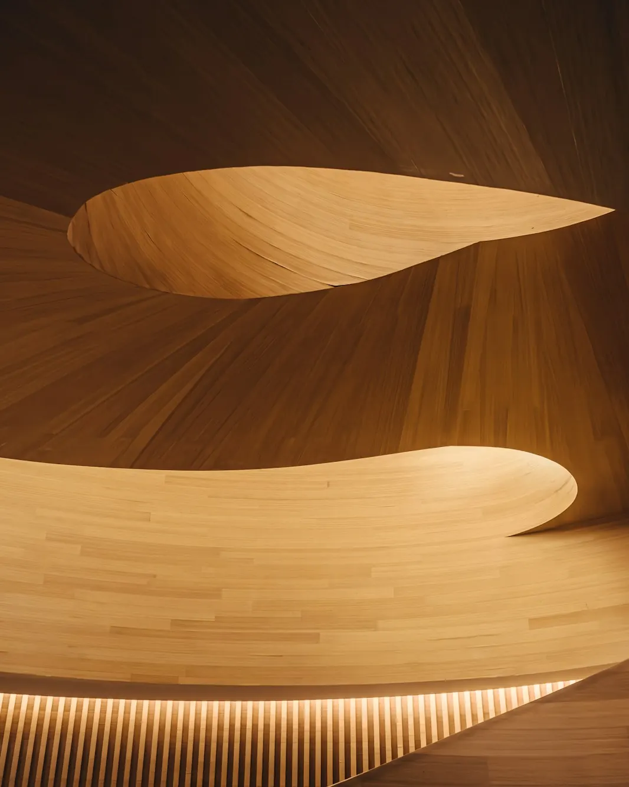
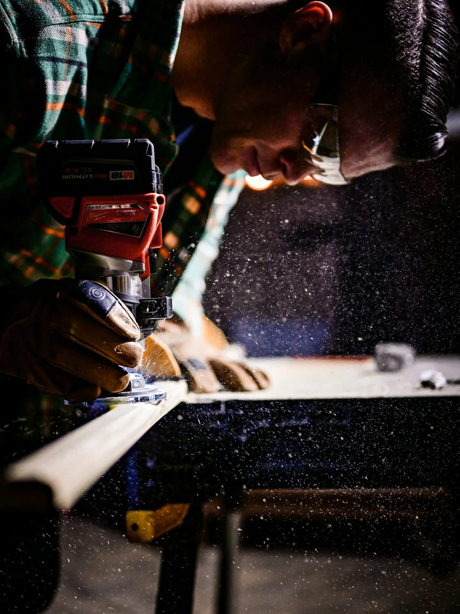
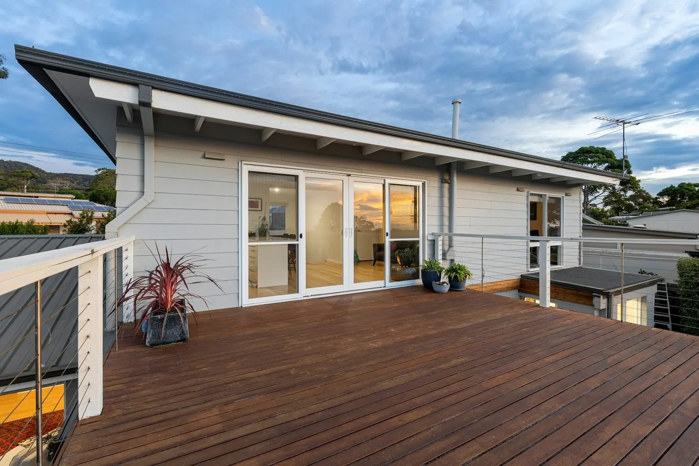
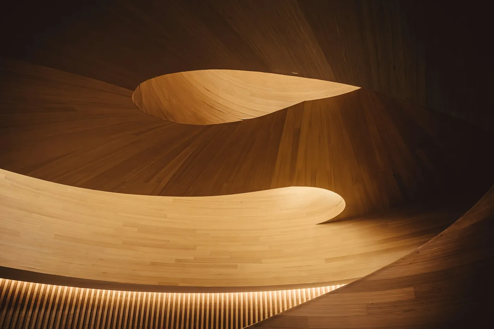
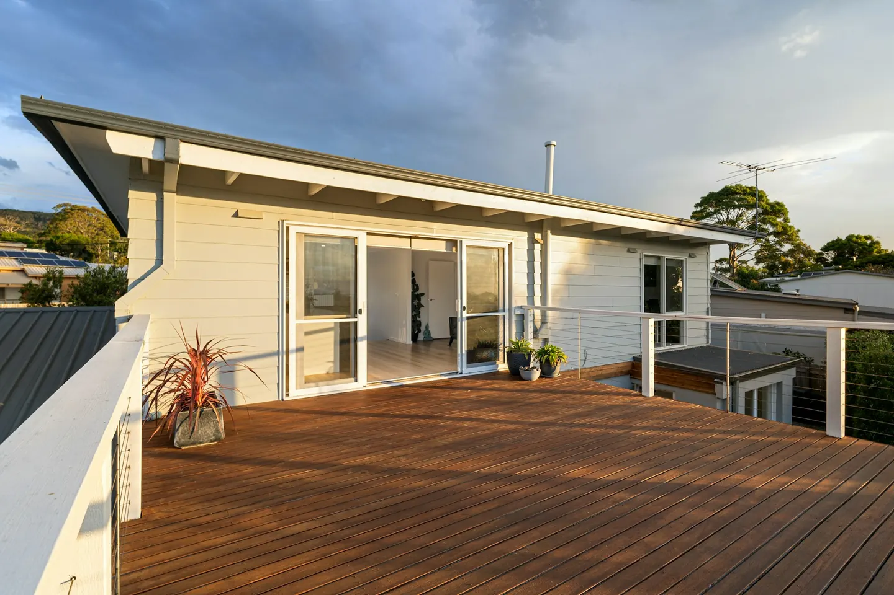
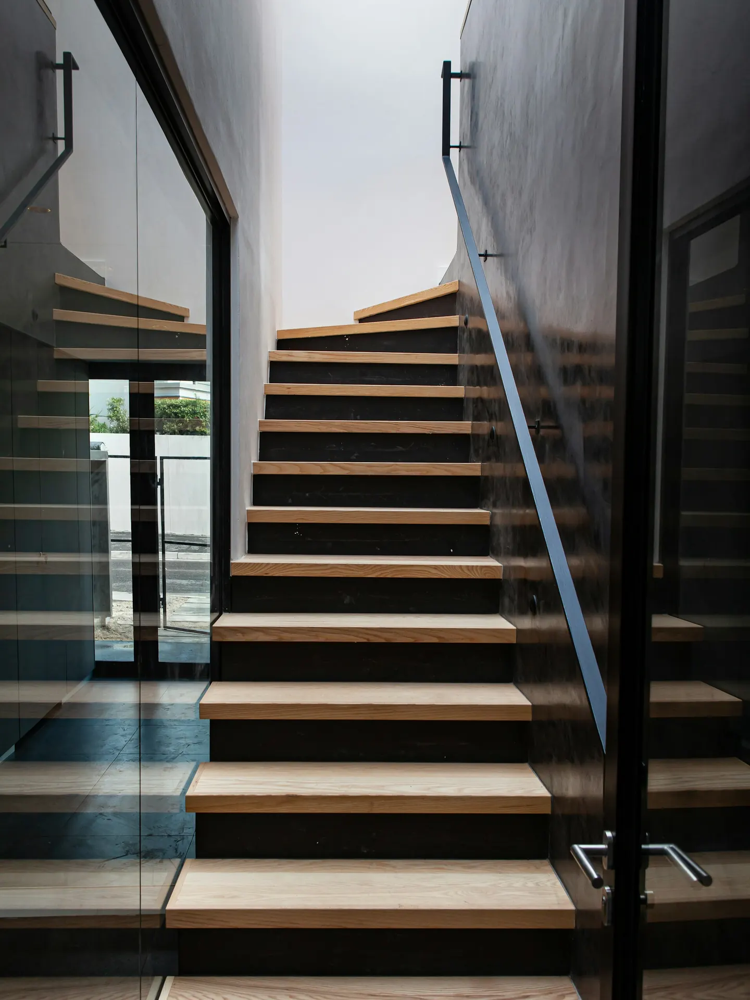

Timber work that takes the long way round.
Staircases, decks, outdoor rooms and joinery in Tallowwood, Spotted Gum and Blackbutt. Hand built by Ned Harlow in his Bangalow shed for homes across the Byron hinterland.
Based in Bangalow. Building across the Byron hinterland and the coast.



Decks, stairs and ceilings, all out of one shed.
TallowwoodEucalyptus microcorysYou don't want a stair out of a catalogue. You want the one that could only belong in your house.
Everything comes in pine and plasterboard
Most builders reach for the same treated pine and the same kit balustrade. Fine for a spec home. Not for the place you have been dreaming about.
Nobody wants to keep the character
You have old hardwood, a rough-sawn look you love, or a tree you will not cut down. Too often the answer is "that's too hard".
Three trades, three opinions
Framer, deck builder, joiner. Every handover is a chance for the vision to get lost and the finish to slip.

One carpenter who loves the hard bits.
A handrail that has to bend. A deck that steps down a ridge. A ceiling without a straight line in it. Those are the jobs Ned picks up the phone for.
- Real Australian hardwoods, chosen for your job and your site
- Built and dry fitted in the shed, so it goes in right
- Framing, fit-out and finishing by the same set of hands
Recent builds, in Ned's words.
Every project here has its own page with the full story, the timber used, and photos from the shed through to the finished job.



“You draw a treehouse the way a kid would, then you engineer it the way a carpenter should.”Ned, on the treehouse

Contents
If it is made of timber and it has to be done properly, it is probably on this list. Each one links to a job where you can see it done.
Staircases
See: The curved-rail staircaseHoused, hand-fitted stairs in solid hardwood, dry fitted in the shed first.
Decks and verandahs
See: The 240 m² hinterland deckHardwood decks that wrap the house, step down the hill, or go round a tree.

Floating and spiral stairs
See: The floating treads and the spiralOpen treads, hidden fixings and the stairs nobody else wants to quote.

Interior joinery
See: The curved ceilingBatten ceilings, shelving, benchtops and built-ins in real timber.
Treehouses and play spaces
See: The treehouseLookouts, bridges and cubbies built to outlast the kids.
Framing and renovations
See: Post framing on the treehouse jobRoof framing, pergolas, doors, windows and lock-up.

Six east coast timbers. Pick one.
The Northern Rivers grows some of the best timber in the country. Choose a species to see its grain and the jobs Ned has built with it.
Tallowwood Eucalyptus microcorys
The shed's namesake. Dense, naturally oily and almost impossible to wear out, which is why it ends up underfoot: stair treads, thresholds and floors that take a beating.
From the shed to your place.
Four steps: marked out by hand, built in Ned's Bangalow shed, then installed on site.
Have a yarn
Call or send a brief through the planner. Ned comes out, looks at the site and listens to what you are picturing, then talks timber and price straight.
Pick the timber
Tallowwood, Spotted Gum, Blackbutt or your own old boards. Ned helps you choose for colour, grain and where it is going, then marks out every piece by hand.
Built in the shed
The tricky pieces are built and dry fitted in the Bangalow shed first, so every joint is right before anything comes to your place.
“If it does not go together in the shed, it will not go together on your wall. So it goes together in the shed first.”Ned, most days
Installed and finished
Then it comes to site and goes in properly. Fixed, checked, oiled and cleaned up, ready to use.
 Ned Harlowin the shed, Bangalow
Ned Harlowin the shed, BangalowA local carpenter who builds the long way.
“Measure it properly, cut it once, and leave it better than the drawing.”Tallowwood Carpentry
Ned runs Tallowwood Carpentry out of a shed in Bangalow, surrounded by stacked slabs of local hardwood. He takes on the jobs other carpenters pass on: the one-off stair, the deck down the ridge, the treehouse with no kit in sight. Then he does them the long way, because that is what lasts.
- Business
- Tallowwood Carpentry
- Established
- 2012
- Based in
- Bangalow, NSW
- Licence and insurance
- Licensed carpenter, fully insured
Start your build in a minute.
Four quick steps. Ned gets a clear brief, you get a call back to talk it through. No obligation, no hard sell.
Thanks. Here's what Ned would see.
This is a concept site for a fictional business, so nothing was sent.
Before you ring.
What area do you cover?
Ned is based in Bangalow and works across the Byron hinterland and the coast, including Byron Bay, Mullumbimby, Newrybar, Federal, Clunes, Lennox Head, Brunswick Heads. If you are further out, ring and ask. Bigger jobs can be worth the drive.
What timber do you work with?
Mostly east coast hardwoods: Tallowwood, Spotted Gum, Blackbutt and Ironbark, plus Hoop Pine and Red Cedar for interiors and furniture. Got your own old boards? Even better.
Can you work with my architect or builder?
Yes. A lot of the stairs and joinery are built to an architect’s drawings, and Ned is happy to sit down early and work out how to actually make the thing.
Why build it in the shed first?
Because the shed is flat, dry and has every tool within reach. A stair that has been dry fitted there goes into your house in a day or two instead of a fortnight.
How does pricing work?
You get a fixed written quote after a site visit, with the timber and the scope spelled out. If something changes, you hear about it before any more work is done.
How far ahead are you booked?
Usually a couple of months for bigger builds. Small jobs can often be slotted in sooner. The planner below is the quickest way to get on the list.
Got a build in mind? Ned's a phone call away.
Tell him what you are picturing. He'll tell you honestly how he'd build it, what timber he'd use, and what it'll take.
Building across the Byron hinterland
- Bangalow
- Byron Bay
- Mullumbimby
- Newrybar
- Federal
- Clunes
- Lennox Head
- Brunswick Heads
- and surrounds